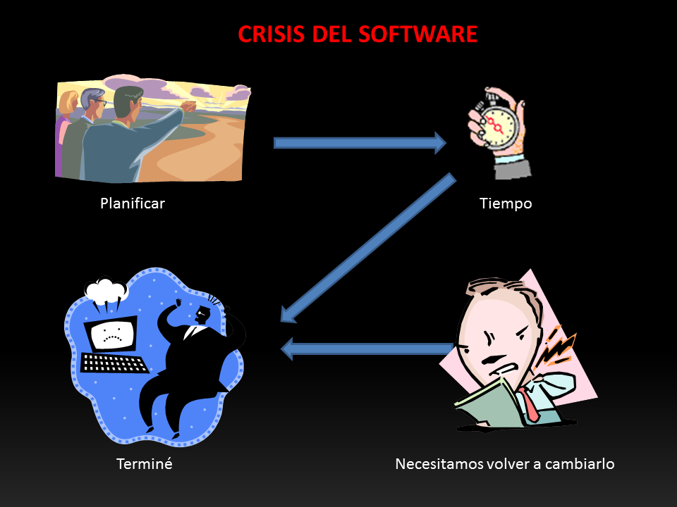
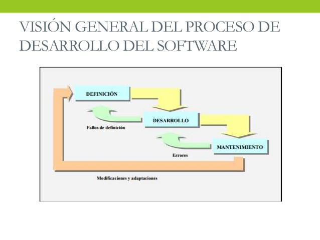

Unidad 1: Introducción a la Ingeniería de Software
Fritz Bauer afirma que Más que una disciplina o una parte del conocimiento, la Ingeniería es un verbo, una palabra de acción, un modo de enfocar el problema. Pero al referirnos a un termino mas general y objetivo, podemos decir que es la aplicación práctica del conocimiento para proveer metodologías y técnicas que ayuden en el desarrollo del Software
-Diseñar programas informáticos que se adecúen a las exigencias de la sociedad.
-Liderar y acoplar el desarrollo de programaciones complicadas.
-Actuar en todas las fases del ciclo de vida de un producto.
-Computar los costos de un proyecto y evaluar los tiempos de desarrollo.
-Realizar el seguimiento de costes y plazos.
-Liderar equipos de trabajo de desarrollo software.
-Estructurar la elaboración de evidencias que comprueben el perfecto funcionamiento de los programas y que se adaptan a
los requerimientos de análisis y diseño.
-Diseñar, construir y administrar bases de datos.
-Liderar y orientar a los programadores durante el desarrollo de aplicaciones.
-Incluir procesos de calidad en los sistemas, calculando métricas e indicadores y chequeando la calidad del software producido.
Ingeniería del Software, es el término utilizado por Fritz Bauer en la primera conferencia sobre desarrollo de software patrocinada por el Comité de Ciencia de la OTAN celebrada en Garmisch (Alemania), en octubre de 1968, previamente había sido utilizado por el holandés Edsger Dijkstra en su obra The Humble Programmer.
Una definición atribuida a Lehman y Ramil dice que la evolución del software es “todas las actividades de programación que se orientan a generar una nueva versión de un software a partir de una versión anterior operativa.
La crisis en la industria del software permanece durante muchos años, lo cual parece una contradicción para el término. Lo que si se podría decir es que hay un problema crónico en el desarrollo de software.

La Ingeniería en Software se crea debido a las siguientes caracteristicas: *El producto debe ser confiable y realizar sólo las tareas especificadas en los requerimientos. *El producto debe ser robusto. Esto quiere decir que el software se comporta de manera razonable, incluso en circunstancias no anticipadas desde el principio. *El producto de software debe cumplir con los requerimientos de rendimiento especificados, es decir, debe cumplir algunas de las restricciones relacionadas al rendimiento.
Metodologias Ágiles
métodos de desarrollo de software basados en procesos iterativos e incrementales,
donde los requisitos y
soluciones evolucionan durante la colaboración.
Son las que están relacionadas con el desarrollo del software como
funcionalidad, complejidad, eficiencia. Entre las métricas del software tenemos las siguientes:
Métricas técnicas: Se centran en las características del software. Aquí medimos la complejidad lógica y el grado de modularidad
del sistema. Mide la estructura del sistema, el cómo está hecho.
Métricas de calidad: Son todas las métricas de software que definen de una u otra forma la calidad del software; tales
como corrección, exactitud, integridad, facilidad de uso, estructuración o modularidad, pruebas, facilidad de
mantenimiento, reusabilidad, cohesión del módulo, acoplamiento del módulo, etc.
Facilidad de Mantenimiento: es la sencillez con que un programa puede corregirse si se encuentra un error, al adaptarse si su
entorno cambio o mejorar si el cliente cambia los requisitos y se mide en forma indirecta en TMC (Tiempo Medio de Cambio).
Integridad: es la habilidad de un sistema para resistir ataques que requiere la definición de amenaza y seguridad y se calcula:
integridad = 1 – (amenaza * (1 – seguridad)).
El Software puede dividirse en dos grandes grupos: Software de aplicaciones: se usan para proveer servicios a clientes y ejecutar negocios de forma más eficiente. El software de aplicaciones puede ser un sistema pequeño o uno grande integrado. Software de sistemas: El software de sistemas se usa para operar y mantener un sistema informático. Permite a los usuarios usar los recursos del ordenador directamente y a través de otro software.
Con independencia del área, tamaño o complejidad del proyecto, cualquier proyecto se encontrará al menos
en una de las siguientes fases:
